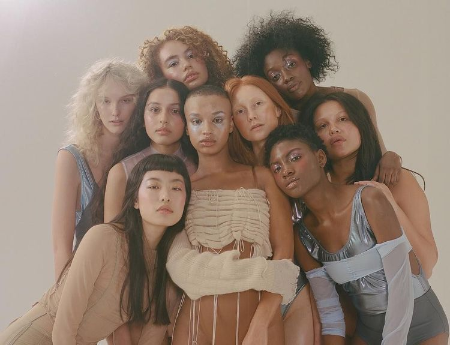
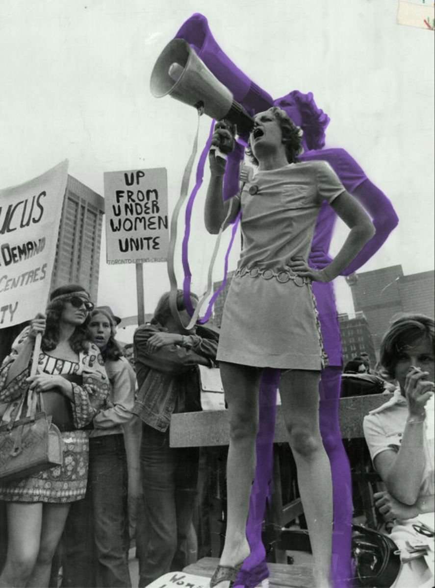
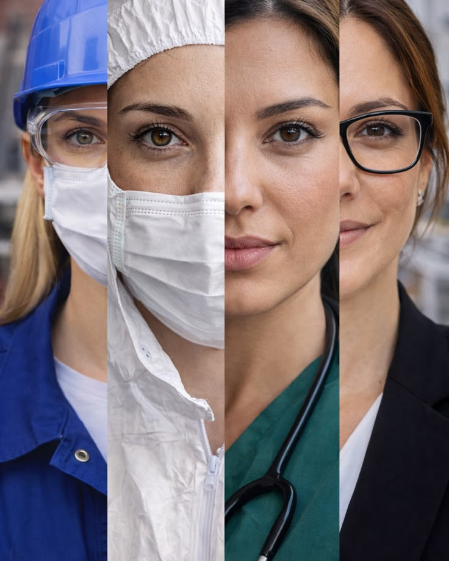
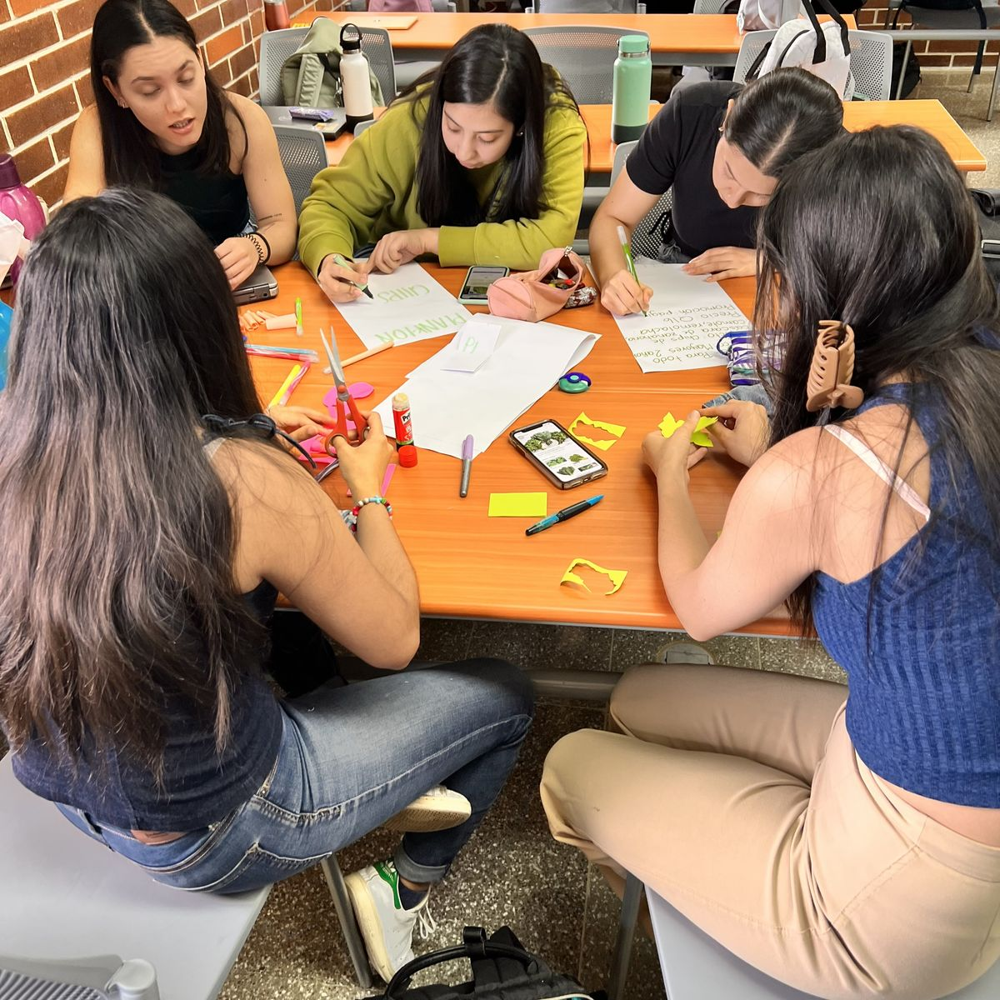
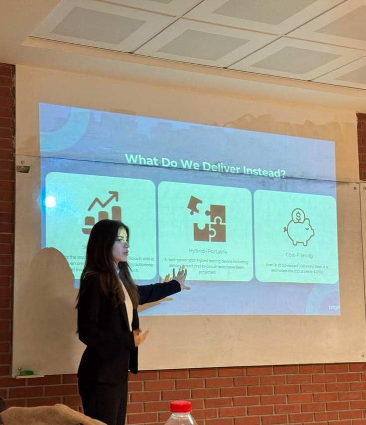
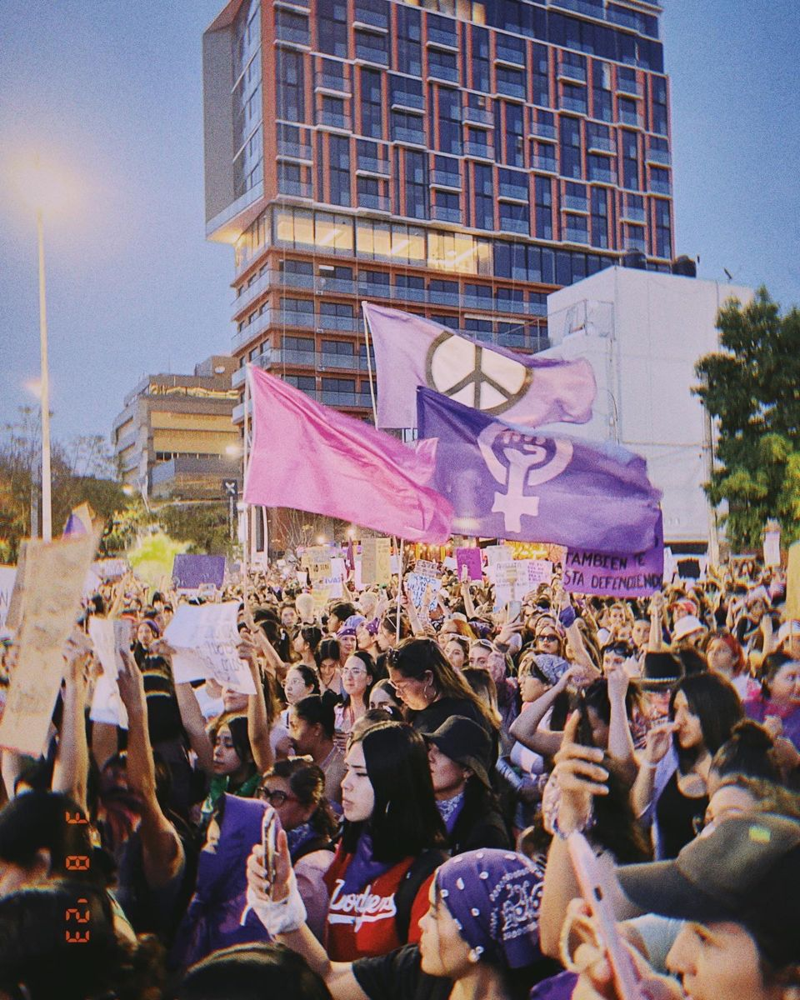
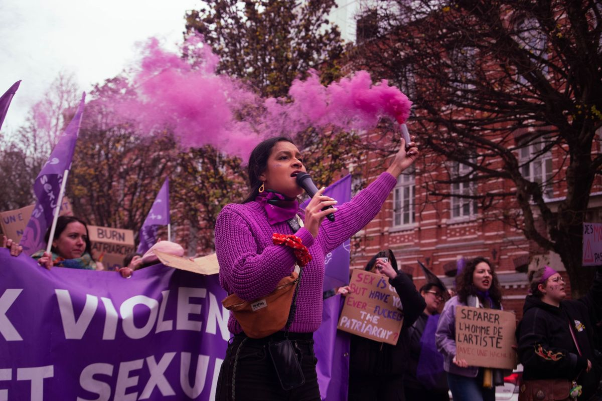

ODS 5: Igualdade de Gênero
Igualdade é um direito, não um privilégio.
Por que ainda precisamos falar sobre igualdade?
Ser mulher ainda significa enfrentar barreiras que não deveriam existir. A violência, o machismo, a desigualdade salarial e a falta de oportunidades demonstram que os direitos conquistados ainda não são plenamente respeitados. O problema não está na capacidade das mulheres, mas nas desigualdades que a sociedade continua reproduzindo.
O que precisa mudar?
A igualdade não será alcançada apenas com leis, mas também com mudanças na educação e no comportamento da sociedade. É necessário ensinar o respeito desde cedo, combater atitudes machistas, garantir segurança às mulheres e oferecer as mesmas oportunidades de crescimento profissional e pessoal.
Nossa proposta: informação que transforma
Este projeto busca utilizar a internet como ferramenta de conscientização. Por meio deste site, queremos aproximar as pessoas do tema, apresentar as desigualdades que ainda existem e incentivar atitudes que contribuam para uma sociedade mais justa. Afinal, conhecer um problema é o primeiro passo para transformá-lo.
Igualdade é um direito, não um privilégio.

Uma sociedade só avança de verdade quando todas as pessoas têm liberdade para escolher seus caminhos, ocupar espaços e realizar seus sonhos, sem limitações impostas pelo gênero. A igualdade de gênero é essencial para construir um mundo mais justo, seguro e cheio de oportunidades.
Nossa história: uma luta por direitos

Ao longo da história, as mulheres precisaram lutar para conquistar direitos que hoje são fundamentais, como estudar, votar, trabalhar e participar das decisões da sociedade. Essas conquistas foram resultado de movimentos e da coragem de muitas mulheres que enfrentaram o preconceito e a desigualdade. Apesar dos avanços, essa luta ainda não terminou. Garantir igualdade significa respeitar as conquistas do passado e continuar construindo um futuro com os mesmos direitos e oportunidades para todos.
Mulheres que transformam a sociedade

As mulheres estão presentes em todas as áreas da sociedade, contribuindo para a ciência, a educação, a política, a cultura e a economia. Mesmo enfrentando preconceitos e obstáculos, elas demonstram diariamente sua capacidade de transformar o mundo. Valorizar suas conquistas e garantir que tenham espaço para participar das decisões é fundamental para uma sociedade mais democrática e igualitária.
Igualdade na educação

A educação é uma das principais ferramentas para combater a desigualdade de gênero. Meninas e meninos devem ter as mesmas oportunidades de aprender, desenvolver habilidades e escolher suas profissões. É importante combater estereótipos que limitam os sonhos das crianças e incentivar a participação das meninas em todas as áreas do conhecimento, inclusive na ciência, na tecnologia e na engenharia.
Desigualdade no mercado de trabalho

Mesmo com grandes avanços, muitas mulheres ainda enfrentam dificuldades no mercado de trabalho. Diferenças salariais, poucas oportunidades de liderança, preconceito e a responsabilidade desigual pelas tarefas domésticas são alguns dos desafios existentes. Para mudar essa realidade, é necessário garantir salários justos, respeito profissional e oportunidades iguais de crescimento, independentemente do gênero.
Violência contra a mulher: uma realidade que precisa mudar
A violência contra a mulher é uma das formas mais graves de desigualdade. Ela pode acontecer de diferentes maneiras, como violência física, psicológica, sexual, moral e patrimonial. Muitas mulheres vivem situações de medo e dependência, o que dificulta a busca por ajuda. Combater essa realidade exige informação, acolhimento, denúncia e políticas públicas que protejam as vítimas. Nenhuma mulher deve ter sua liberdade ou segurança ameaçada.
O papel da sociedade na transformação

A construção de uma sociedade igualitária depende da participação de todos. Respeitar as mulheres, combater comentários preconceituosos, dividir as responsabilidades e não ignorar situações de violência são atitudes que fazem diferença. A mudança também começa dentro de casa, nas escolas, no trabalho e nas relações do dia a dia. Pequenas atitudes podem contribuir para transformar comportamentos e construir uma sociedade mais respeitosa.
Nossa proposta: informação que transforma

A internet pode ser uma grande ferramenta de conscientização. Por meio deste site, queremos informar sobre a desigualdade de gênero, apresentar os desafios enfrentados pelas mulheres e incentivar atitudes que contribuam para a mudança. Acreditamos que compartilhar conhecimento é um passo importante para combater o preconceito e promover o respeito. Quando a informação chega às pessoas, ela pode transformar pensamentos e inspirar novas atitudes.
O futuro precisa de igualdade!
Um mundo mais justo começa quando todas as pessoas têm os mesmos direitos, oportunidades e liberdade para construir seus próprios caminhos. A igualdade de gênero não é apenas uma conquista das mulheres, mas um avanço para toda a sociedade. Essa transformação depende de cada um de nós.
Onde buscar ajuda?
Mulheres que sofrem violência não estão sozinhas. Existem serviços gratuitos que oferecem orientação, acolhimento e proteção.
180 — Central de Atendimento à Mulher: orientação e registro de denúncias.
190 — Polícia Militar: em situações de emergência.